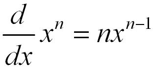
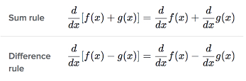
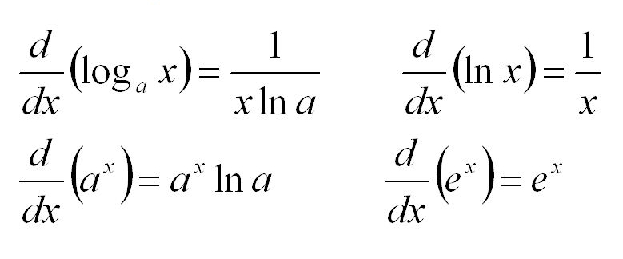

Introduction
In this page, you will learn the basics of differential calculus. There are many applications that will be explained in this article. There are many different rules and concepts related to this essential part of calculus. To learn more, you can visit Khan Academy to look at more information about this. On the website, there are many different videos and exercises that can help reinforce this topic.
Basic Rules
Power Rule
This rule is the most basic of differential calculus. This rule tells you the derivative of a polynomial function. But the obvious limitation is that the power rule can only be used with polynomial functions.
Sum and Difference Rules
Again, these rules are very simple. One could explain these rules as: "The derivative of the sum of functions is equal to the sum of the derivatives of the functions individually." and "The derivative of the difference of functions is equal to the difference of the derivatives of the functions individually."
Advanced Rules
Product and Quotient Rules
These rules are more complex than the rules described above. These two rules are considered extensions of the power rule and the addition and subtraction rules.To see the formulae for these rules, click on the arrow.
Chain Rule
The chain rule is a very difficult concept to grasp. This rule is known as an extension of the product rule but it seems more complex. Although difficult to explain, Khan Academy explains this rule in a way that is every engaging and easy to understand.
Log and Exponential Rules
If learning logarithms wasn't hard enough in Precalculus, one must know the patterns for the derivatives of logarithmic functions in order to do many problems related to rates and graphs. Especially for the natural logarithms of base e. You will also have to know the derivatives of any exponential function of any base.
Applications of Derivatives
There are many applications for using derivatives, either in the classroom or in the real world.Some examples of classroom-like problems for derivatives could include:
- Given a graph of a function, find the slope of the graph at a certain point on the graph.
- Given a theoretical real-world problem, find the rate at which something changes at a given point in time.
- Given a pair of functions, find the derivative of the sum of those functions.
There are also almost infinite amount of real-world applications that uses derivatives.
- You have a large tank of water that you need to empty. You could find the rate at any point in time during the removal of the water given how the volume changes and the height of the water at that time.
- You are a car that is approaching a police car. You have find the rate at which you need to slow down in order to not get caught speeding by the cop.
Both of these lists could be almost infinite. This fact shows how powerful and important derivatives are to our lives. They are important but we don't know that they are being used during our regular lives. Knowing derivatives could help many in almost every working field or everyday life.
The photo below from a video by Khan Academy that goes over a problem that uses derivatives using the volume of the cone. Click here for the full video and explanation.